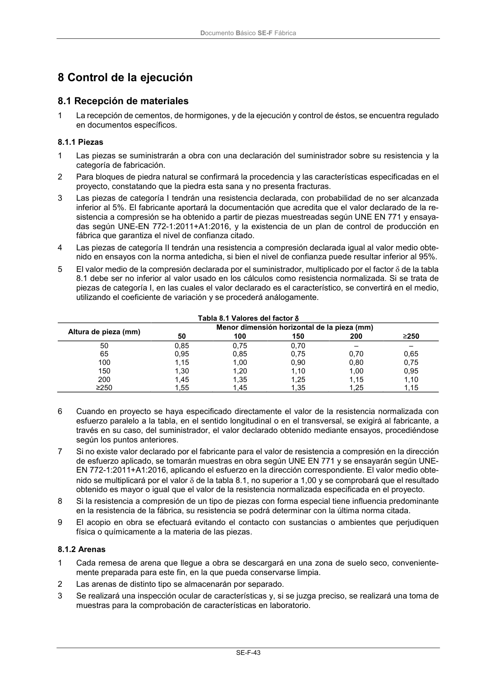

DB-SE-F Fábrica · edición 2019-12-20 · capa oficial
Documento DB-SE-F-oficial · SHA-256 del PDF e3e0805c3b4c307519c26dc34c3fdbf143d842edd013c91b0f52d2c73403d91c
Página física 47 de 70.
Copia fiel del PDF fuente · Fuente oficial
Ficha de la disposición en la fuente oficial
Formato: Texto de la página (Markdown)
Documento Básico SE-F Fábrica SE-F-43 8 Control de la ejecución 8.1 Recepción de materiales 1 La recepción de cementos, de hormigones, y de la ejecución y control de éstos, se encuentra regulado en documentos específicos. 8.1.1 Piezas 1 Las piezas se suministrarán a obra con una declaración del suministrador sobre su resistencia y la categoría de fabricación. 2 Para bloques de piedra natural se confirmará la procedencia y las características especificadas en el proyecto, constatando que la piedra esta sana y no presenta fracturas. 3 Las piezas de categoría I tendrán una resistencia declarada, con probabilidad de no ser alcanzada inferior al 5%. El fabricante aportará la documentación que acredita que el valor declarado de la re- sistencia a compresión se ha obtenido a partir de piezas muestreadas según UNE EN 771 y ensaya- das según UNE-EN 772-1:2011+A1:2016, y la existencia de un plan de control de producción en fábrica que garantiza el nivel de confianza citado. 4 Las piezas de categoría II tendrán una resistencia a compresión declarada igual al valor medio obte- nido en ensayos con la norma antedicha, si bien el nivel de confianza puede resultar inferior al 95%. 5 El valor medio de la compresión declarada por el suministrador, multiplicado por el factor de la tabla 8.1 debe ser no inferior al valor usado en los cálculos como resistencia normalizada. Si se trata de piezas de categoría I, en las cuales el valor declarado es el característico, se convertirá en el medio, utilizando el coeficiente de variación y se procederá análogamente. Tabla 8.1 Valores del factor Altura de pieza (mm) Menor dimensión horizontal de la pieza (mm) 50 100 150 200 ≥250 50 0,85 0,75 0,70 – – 65 0,95 0,85 0,75 0,70 0,65 100 1,15 1,00 0,90 0,80 0,75 150 1,30 1,20 1,10 1,00 0,95 200 1,45 1,35 1,25 1,15 1,10 ≥250 1,55 1,45 1,35 1,25 1,15 6 Cuando en proyecto se haya especificado directamente el valor de la resistencia normalizada con esfuerzo paralelo a la tabla, en el sentido longitudinal o en el transversal, se exigirá al fabricante, a través en su caso, del suministrador, el valor declarado obtenido mediante ensayos, procediéndose según los puntos anteriores. 7 Si no existe valor declarado por el fabricante para el valor de resistencia a compresión en la dirección de esfuerzo aplicado, se tomarán muestras en obra según UNE EN 771 y se ensayarán según UNE- EN 772-1:2011+A1:2016, aplicando el esfuerzo en la dirección correspondiente. El valor medio obte- nido se multiplicará por el valor de la tabla 8.1, no superior a 1,00 y se comprobará que el resultado obtenido es mayor o igual que el valor de la resistencia normalizada especificada en el proyecto. 8 Si la resistencia a compresión de un tipo de piezas con forma especial tiene influencia predominante en la resistencia de la fábrica, su resistencia se podrá determinar con la última norma citada. 9 El acopio en obra se efectuará evitando el contacto con sustancias o ambientes que perjudiquen física o químicamente a la materia de las piezas. 8.1.2 Arenas 1 Cada remesa de arena que llegue a obra se descargará en una zona de suelo seco, conveniente- mente preparada para este fin, en la que pueda conservarse limpia. 2 Las arenas de distinto tipo se almacenarán por separado. 3 Se realizará una inspección ocular de características y, si se juzga preciso, se realizará una toma de muestras para la comprobación de características en laboratorio.
